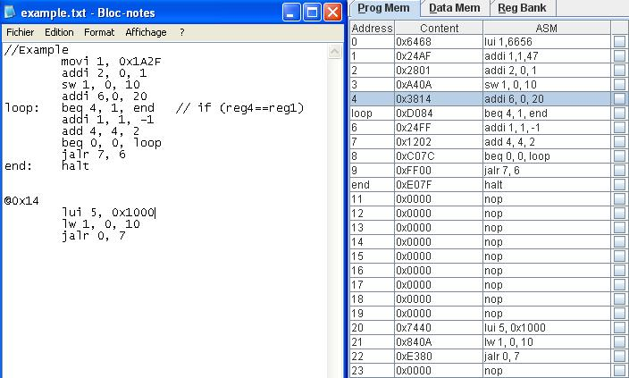

RiSC16 Simulators - Help
Help Index
General Information
├ Introduction on the Simulator
├ The Original Instruction Set
├ Assembly Language Syntax
└ Dynamic behavior of the simulation
There are two ways to write assembly code for the simulator:
- writing the instructions in the "ASM" column of the "Program Memory" window. To transform the instructions in binary code, it is necessary to click on the "Assembly" button. The pseudo-instruction MOVI will be translate in two instructions, so the next line must be empty.
- importing from a text file via the file menu. In this case, the code is assembled on-the-fly while it is imported. Several text files can be imported.
In text file, some functionalities are available:
- Comment : they must be preceded by a "//" or "#"
- Placement of instructions at specified address : the address must be prefixed by "@" and placed above instructions
- Hexadecimal value: the prefix "0x" indicate that the value is in hexadecimal format. This notation can also be used in the "Program Memory" window.
- Label: the labels are used to point the branch target address. The label must be placed before the instruction and followed by ":" (without any whitespace between label and ":").
The instruction syntaxe can be resumed by :
label:<tab>opcode<tab>field0, field1, field2<tab>// comments
An example of text file is shown in the next figure.

Help Index
General Information
├ Introduction on the Simulator
├ The Original Instruction Set
├ Assembly Language Syntax
└ Dynamic behavior of the simulation